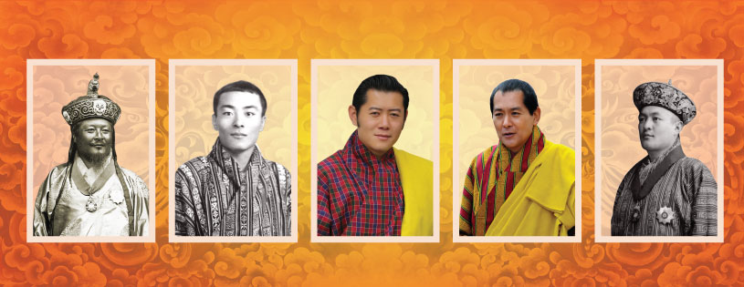

Bhutan's history spans from early settlements (c. 2000 BC) to Buddhist introduction (8th Century by Guru Rinpoche) and unification in 1616 by Zhabdrung Ngawang Namgyal, who established a dual religious/secular system. After civil strife, Ugyen Wangchuck unified the nation, becoming the first hereditary monarch in 1907, starting the Wangchuck dynasty. Bhutan remained isolated but transitioned to a constitutional monarchy in 2008, focusing on development under the GNH (Gross National Happiness) philosophy.
Bhutan is a tiny and remote kingdom nestling in the Himalayas between its powerful neighbours, India and China. Almost completely cut off for centuries, it has tried to let in some aspects of the outside world while fiercely guarding its ancient traditions.
Ugyen Wangchuck (1st King): Reigned from 1907 to 1926, establishing the Wangchuck dynasty and modern Bhutan.
Jigme Wangchuck (2nd King): Reigned from 1926 to 1952, continuing his father's work.
Jigme Dorji Wangchuck (3rd King): Reigned 1952-1972; opened Bhutan to the world, established the National Assembly, and introduced planned development.
Jigme Singye Wangchuck (4th King): Reigned 1972-2006; introduced the philosophy of Gross National Happiness (GNH) and focused on self-reliance.
Jigme Khesar Namgyel Wangchuck (5th King): Reigned from 2006 to present; oversaw Bhutan's transition to a parliamentary democracy and is the current Dragon King (Druk Gyalpo).
 Founadation of BhutanDruk Yul (འབྲུག་ཡུལ་): "Land of the Thunder Dragon," from the Drukpa Kagyu school of Buddhism, named after dragon roars.
Lho Mon (ལྷོ་མོན་): "Southern Land of Darkness," referring to its location south of Tibet and its people's earlier non-Buddhist practices.
Lho Jong Menjong (ལྷོ་ལྗོངས་སྨན་འབྲོong): "Southern Land of Medicinal Herbs," due to its rich botanical resources, especially in valleys like Paro.
Lho Mon Kha Zhi (ལྷོ་མོན་ཁ་བཞི་): "Southern Mon Country of Four Approaches," referencing the four historical entry points.
Lho Tsenden Jong (ལྷོ་མོན་ཚ་སྡেনཇོང་): "Southern Land of Cypress," another descriptive name.
Bhutan: Likely from Sanskrit roots like Bhota-ant ("end of Bhot/Tibet") or Bhu-uttan ("highlands"), used internationally since the late 19th century.